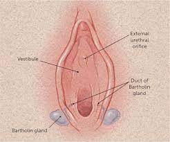

Bartholin's Cyst

CAUSES
Healthcare providers do not know why some women are predisposed to getting Bartholin cysts. Some causes of Bartholin cysts are:
- Injury, irritation or extra growth of skin in the vulvar area of the vagina.
-
Chlamydia, gonorrhea or other sexually transmitted infections (STIs).
-
Bacterial infections such as Escherichia (E. coli).
SYMPTOMS
Many Bartholin cysts are small and do not cause symptoms other than minor irritation. If a Bartholin cyst forms an abscess (infection), symptoms may include:
- Discomfort and pain during sex, walking, sitting, or when inserting a tampon or wiping after using the restroom.
-
Swelling and tenderness in the area.
-
Fever or chills.
-
Redness.
-
Drainage from the cyst.
-
Change in size (the cyst gets larger).
DIAGNOSIS
To diagnose a Bartholin cyst, a healthcare provider will do a physical exam. They will look at the size of the cyst and look for signs of infection. If the cyst produces discharge, your healthcare provider may test the fluid for sexually transmitted infections (STIs) or other bacterial infections.
TREATMENTS
Treatment options may include:
- Sitz baths: Sit in a bathtub with 3 to 4 inches of warm water a few times a day for several days. This can provide comfort and promote healing. It could also help the infected cyst to burst and drain on its own.
-
Over-the-counter pain medications: Take as directed for pain relief and discomfort.
Antibiotics: If your cyst becomes infected or tests show you have a sexually transmitted infection (STI), your healthcare provider may prescribe antibiotics.
-
Surgical draining: If your cyst is large and infected, surgery may be done to drain the fluid. A small tube called a catheter will be inserted into the cyst. The catheter is usually left in place for several weeks to allow for complete drainage.
-
Marsupialization: The cyst is surgically opened and drained. Then, the surgeon will stitch the edges of the cyst wall to form a permanent open pocket or “pouch” for continuous drainage. This is often helpful for recurrent Bartholin cysts.
-
Removal of the Bartholin’s gland: In extremely rare cases where treatment is not working, your healthcare provider may surgically remove the Bartholin glands.